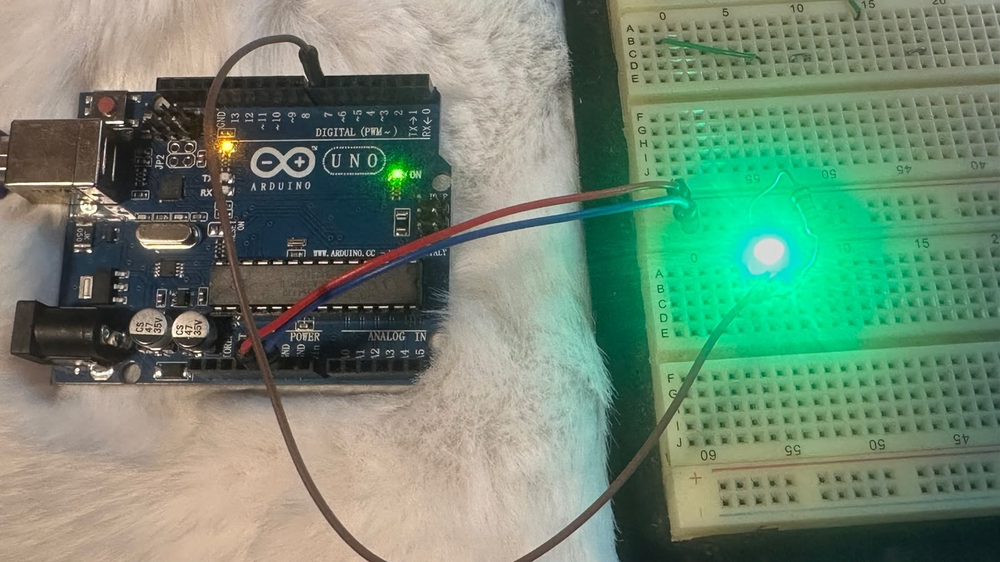

Introducción a Ardrino
Aprendimos la estructura básica de HTML y cómo usar etiquetas de texto.
Semana 2:introduccion a la Robotica
En esta parte del curso aprendimos a usar CSS para crear clases como esta y dar un aspecto profesional a nuestra web.
Semana 3: Circuito prueba
En esta sesión se observa el desarrollo y funcionamiento del circuito de prueba.

Semana 4
En esta sesión se observa el circuito realizado en Tinkercad.
Semana 5
En esta sesión se observa el circuito RGB funcionando físicamente y mostrando colores distintos al rojo, azul y verde.